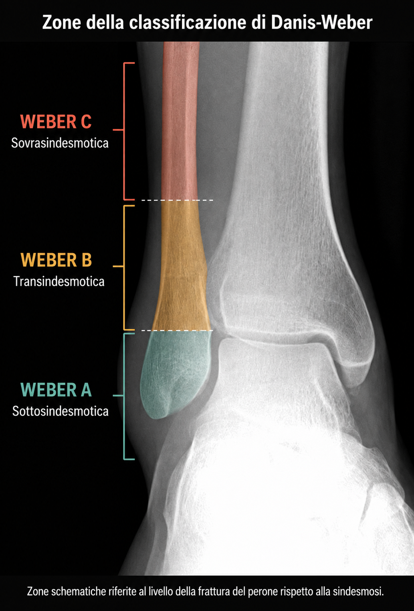

Come riconoscerla, come si valuta la stabilità e quando può essere necessario un intervento
Dopo un trauma alla caviglia, una delle prime domande è capire se si tratti di una distorsione o di una frattura e, soprattutto, se sarà necessario un intervento. Le fratture di caviglia non sono tutte uguali, alcune sono stabili e possono essere trattate senza chirurgia, altre alterano la stabilità o la congruenza dell'articolazione e richiedono un intervento.
La caviglia è formata dall'estremità distale della tibia e del perone, che insieme circondano l'astragalo formando il cosiddetto mortaio tibio-peroneale. La stabilità dipende non solo dalle ossa, ma anche dai legamenti laterali, dal legamento deltoideo e dalla sindesmosi tibio-peroneale distale.
Una frattura può interessare il malleolo laterale, il malleolo mediale e/o il malleolo posteriore. Quando sono coinvolte più componenti si parla di frattura bimalleolare o trimalleolare. Il numero di malleoli coinvolti non descrive da solo la stabilità della lesione, per decidere il trattamento è necessario considerare il meccanismo traumatico.
La classificazione di Danis-Weber distingue le fratture del perone in tipi A, B e C in base alla loro posizione rispetto alla sindesmosi, il complesso di legamenti che unisce tibia e perone vicino alla caviglia. La lettera descrive la sede della frattura; da sola non stabilisce se sia necessario un intervento. [11]
| Tipo | Sede della frattura del perone | Significato clinico |
|---|---|---|
| Weber A | Al di sotto della sindesmosi | Spesso stabile, comunemente il trattamento è conservativo, a meno che ci siano altre lesioni associate. |
| Weber B | A livello della sindesmosi | Può essere stabile oppure instabile. La stabilità va verificata |
| Weber C | Al di sopra della sindesmosi | Richiede particolare attenzione a sindesmosi e lesioni associate |

Il perone è fratturato al di sotto della sindesmosi. Se la lesione è isolata e la caviglia rimane stabile, spesso è possibile un trattamento senza intervento. Devono comunque essere escluse lesioni associate.
La frattura si trova al livello della sindesmosi. Una Weber B non richiede automaticamente un intervento: conta soprattutto se l'astragalo rimane correttamente allineato tra tibia e perone. Una lesione stabile può essere trattata conservativamente; l'instabilità può rendere necessaria la chirurgia.
La frattura è situata sopra la sindesmosi e può associarsi a lesioni dei legamenti che stabilizzano la caviglia. La valutazione deve comprendere l'intera lesione, anche verso la parte alta del perone, e non soltanto il punto doloroso alla caviglia. [11]
La classificazione di Lauge-Hansen cerca invece di ricostruire il meccanismo traumatico. Nella pratica moderna viene integrata con esame clinico e imaging, senza sostituire la valutazione diretta della stabilità della caviglia.
Dolore, gonfiore ed ecchimosi possono comparire sia nelle fratture sia nelle lesioni legamentose della caviglia. Per questo l'intensità dei sintomi, da sola, non consente di distinguere con sicurezza le due condizioni.
È possibile, in alcune fratture composte, riuscire ancora a camminare. Al contrario, una distorsione importante può rendere il carico molto doloroso anche in assenza di fratture.
La valutazione parte dall'anamnesi e dall'esame clinico, con attenzione alla sede del dolore, alle condizioni della cute, alla presenza di deformità e allo stato vascolare e neurologico dell'arto.
Le Ottawa Ankle Rules sono regole cliniche validate che aiutano a stabilire quando una radiografia sia indicata dopo un trauma acuto. Non sostituiscono il giudizio clinico, soprattutto nei pazienti con condizioni che ne limitano l'applicabilità.
Le radiografie rappresentano l'esame di prima linea nella maggior parte delle fratture. La proiezione del mortaio è particolarmente utile per valutare la congruenza articolare.
La TC può essere molto utile nelle fratture più complesse, soprattutto quando è coinvolto il malleolo posteriore o quando è necessario definire meglio la morfologia articolare per la pianificazione chirurgica. La risonanza magnetica non è un esame di routine nella frattura acuta di caviglia e viene riservata a quesiti selezionati.
Composta significa che i frammenti ossei mantengono il loro allineamento; stabile significa che la caviglia è in grado di mantenere una posizione articolare corretta. I due termini non sono equivalenti. Se la stabilità è dubbia, possono servire controlli e radiografie sotto carico, quando indicate dal medico. [12]
No. La presenza di una frattura non costituisce automaticamente un'indicazione chirurgica. Il punto centrale è capire se la caviglia sia stabile e congruente.
Le fratture stabili e adeguatamente allineate possono spesso essere trattate senza intervento. Questo vale anche per alcune fratture isolate Weber B quando la stabilità del mortaio viene confermata clinicamente e radiograficamente.
La chirurgia viene invece presa in considerazione quando la frattura determina una perdita di stabilità o di congruenza articolare non accettabile, in presenza di una frattura-lussazione, quando l'allineamento non può essere mantenuto con il trattamento conservativo o in specifici pattern complessi.
Nelle fratture considerate stabili il trattamento può prevedere un tutore funzionale o un'immobilizzazione, associati a controlli clinici e radiografici quando indicati. Non esiste un periodo fisso di immobilizzazione valido per ogni frattura.
Anche il momento in cui iniziare il carico dipende dalla stabilità della lesione, dai sintomi e dalle caratteristiche del paziente. Studi recenti hanno mostrato che, in specifiche fratture Weber B stabili trattate senza chirurgia, una mobilizzazione e un carico più precoci possono essere sicuri.
Nelle fratture instabili l'obiettivo dell'intervento è ripristinare l'allineamento e la congruenza della caviglia e ottenere una fissazione sufficientemente stabile da consentire la guarigione.
La tecnica più comune è la riduzione aperta e fissazione interna (ORIF), mediante placche, viti o altri sistemi di sintesi scelti in base alla morfologia della frattura e alla qualità ossea.
Storicamente l'indicazione alla fissazione del malleolo posteriore veniva spesso basata sulla percentuale di superficie articolare interessata. Questo criterio, utilizzato isolatamente, è oggi considerato insufficiente.
La decisione moderna tiene conto anche della morfologia della frattura alla TC, della congruenza articolare, dell'eventuale impattamento del plafond, della presenza di frammenti intercalari e del rapporto con la stabilità della sindesmosi.
Alcune fratture sono associate a una lesione della sindesmosi. Dopo la riduzione delle componenti ossee, la stabilità sindesmotica deve essere valutata nel contesto dell'intera lesione. Quando persiste un'instabilità significativa può essere necessaria una stabilizzazione dedicata.
Possono essere utilizzate viti trans-sindesmotiche o dispositivi dinamici, ma la scelta dipende dal pattern traumatico e dalla strategia chirurgica: non esiste un sistema universalmente superiore per tutti i pazienti.
Le richieste funzionali del paziente sono importanti, ma non dovrebbero trasformare una frattura stabile in un'indicazione chirurgica soltanto perché il paziente pratica sport. Allo stesso modo, una frattura instabile non diventa automaticamente adatta al trattamento conservativo perché il paziente è anziano o sedentario.
Nel paziente sportivo la pianificazione deve considerare disciplina praticata, livello competitivo, richieste di corsa, salto e cambi di direzione e necessità di recuperare forza e controllo neuromuscolare.
Nel paziente anziano o con comorbilità assumono particolare importanza qualità ossea, condizioni della cute, rischio di caduta, diabete, neuropatie e possibilità di seguire correttamente le indicazioni post-trattamento.
Il protocollo riabilitativo dipende dal tipo di frattura, dal trattamento eseguito, dalla qualità della fissazione e dalle condizioni dei tessuti molli. Gli obiettivi comprendono progressivamente controllo dell'edema, recupero della mobilità, forza muscolare, equilibrio, propriocezione e normalizzazione del cammino.
Dopo una fissazione chirurgica stabile, studi randomizzati recenti hanno messo in discussione la necessità di attendere sistematicamente sei settimane prima di iniziare il carico. In pazienti selezionati, un carico più precoce può essere sicuro, ma il protocollo deve essere deciso in base alla specifica frattura e alle procedure associate.
La guarigione dell'osso e il recupero del cammino non coincidono. Come orientamento generale, la riparazione ossea richiede almeno circa 6 settimane e può proseguire per 10–12 settimane o più. Sono indicazioni generali, non una scadenza per togliere il tutore o riprendere lo sport. [13]
Molte persone riprendono le normali attività nell'arco di 3–4 mesi, mentre il recupero completo può richiedere più tempo, soprattutto dopo lesioni complesse. I controlli verificano sia la consolidazione sia il recupero della funzione.
Non è necessario aspettare lo stesso numero di settimane in tutti i casi. In alcune fratture stabili il carico può essere consentito precocemente; in altre occorre proteggerlo più a lungo. Il medico deve indicare quanto peso appoggiare, con quale tutore e con quali ausili. Non aumentare il carico soltanto perché il dolore è diminuito. [12]
Gonfiore e rigidità possono persistere per mesi, anche quando l'osso è guarito. La riabilitazione aiuta a recuperare gradualmente movimento, forza e cammino. Una limitazione persistente o in peggioramento merita una rivalutazione per comprenderne la causa e adattare il percorso. [13]
Le complicanze dipendono dalla gravità iniziale della lesione, dalle condizioni dei tessuti molli, dalle caratteristiche del paziente e dal trattamento eseguito. Possono comprendere problemi di guarigione della ferita, infezione, rigidità, consolidazione viziosa o ritardata, dolore persistente e disturbi legati ai mezzi di sintesi.
Nel lungo periodo alcune fratture articolari possono evolvere verso artrosi post-traumatica della caviglia. Il rischio è influenzato dall'entità del danno cartilagineo iniziale, dalla congruenza articolare e da altri fattori legati al trauma e al paziente.
Sì. Diverse fratture malleolari sono stabili e possono essere trattate senza chirurgia. La decisione dipende dalla stabilità e dall'allineamento della caviglia, non soltanto dal fatto che sia presente una frattura.
No. Le fratture Weber B possono essere stabili oppure instabili. Quando il mortaio rimane stabile e congruente, il trattamento conservativo può essere appropriato.
No. Alcune fratture consentono ancora l'appoggio. La decisione di eseguire radiografie si basa sull'insieme dei sintomi e dei reperti clinici.
Non di routine. La rimozione dei mezzi di sintesi viene valutata quando esiste un'indicazione specifica, per esempio sintomi correlabili al materiale o altre esigenze cliniche.
Il ritorno allo sport dipende dal tipo di frattura e dal recupero individuale. Oltre alla guarigione ossea devono essere recuperati mobilità, forza, equilibrio, controllo neuromuscolare e capacità di svolgere i gesti specifici della disciplina.
Una frattura è diversa da una lesione prevalentemente legamentosa. Se dopo una distorsione persistono cedimenti o sensazione di instabilità, puoi approfondire l'instabilità cronica di caviglia. Per una panoramica delle principali condizioni consulta invece la sezione dedicata alle patologie del piede e della caviglia.
Una valutazione ortopedica può aiutare a definire il tipo di lesione, la stabilità della caviglia e il percorso terapeutico più appropriato.
Contatta il Dr. Paladino